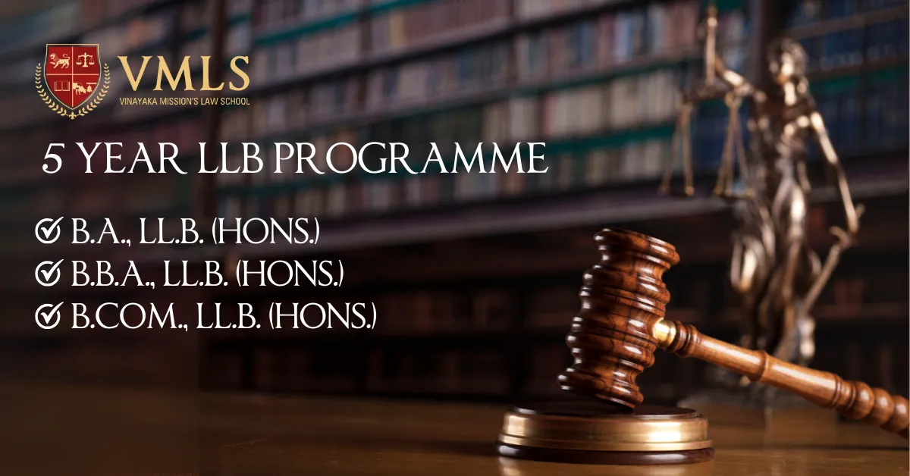

Jan 27, 2025
0 Views

Several students across India are choosing law as a career due to the various benefits it offers. It is a very promising field as it enables students to work in government and private organizations, so students are pursuing law significantly. There are various law courses in India, but the five-year integrated law programme is the best to kickstart your career in law after your higher secondary education.
The five-year programme is a law degree which is offered with an integration with any stream including arts, commerce, or business management. As a result, it allows students to explore their field of interest along with the law subjects. The Vinayaka Mission’s Law School (VMLS) is the best law college in India to complete your education in this field as it offers the best teaching and learning experience. Know more about the different law courses offered by VMLS, their eligibility criteria, the admission process, and further career prospectus through this blog.
At VMLS, you can register yourself for the BA LLB, BBA LLB, and B.Com LLB programmes, and learn about arts, business, and commerce, respectively along with the law subjects. Know more about the subjects included in these courses and the course benefits:
The BA LLB (Bachelor of Arts and Bachelor of Law) degree is the most common five-year integrated programme in India. In this course, the focus is to study art subjects along with law subjects. Some important arts subjects are history, political science, sociology, etc. Along with these subjects, you are supposed to study law subjects like constitutional law, family law, international law, and many more. Students with good communication skills should pursue this skill to work as lawyers, associates, etc.
The BBA LLB (Bachelor of Business Administration and Bachelor of Law) degree is another well-known law degree focusing on business and legal knowledge. It enables students to understand essential skills like analytical thinking, problem-solving, critical thinking, and public speaking. It includes subjects like financial accounting, economics, and management principles, along with law-related subjects like property law, contract law, company law, constitutional law, and many more subjects.
The B.Com LLB (Bachelor of Commerce and Bachelor of Law) specializes in providing legal education along with a focus on commerce studies. It enables students to build a career in law and business. It includes commerce subjects like taxation, economics, etc. along with major law subjects including business law, constitutional law, corporate law, etc. It is the best degree programme for students who wish to work in the corporate sector, or as a marketing manager, corporate manager, or banker.
At VMLS, you’ll be required to learn a few common subjects in the initial semester to build a strong foundation. It may include subjects like political science, history, economics, sociology, and organizational behaviour. VMLS focuses on providing the best education in all the above-mentioned five-year integrated law programs. It enables students to improve their problem-solving skills, network with industry experts, and learn from the best faculties.
To be eligible for the 5-year integrated law programme at VMLS, you need to pass your 10+2 examination or any equivalent examination with good marks. Candidates who are about to proceed for their final exams can also apply, however, they must have their degrees with them during the admission process. Also, to be eligible for admission, you must have not less than 45% marks for General category students. For OBC, the minimum required marks are 42%, and for SC/ST candidates it is 40%. If you’re eligible as per the requirements then you’ll be able to study from the best law college in Tamil Nadu.
The admission process is quite straightforward to get admitted to the five-year integrated LLB programme at VMLS. The university needs your VLAT (VMRF Law Aptitude Test) Score and your 10+2 or equivalent marks. If you are eligible for admission then you can get a seat in VMLS.
The following steps will enable you to know more about the admission process at VMLS:
Give your Law Career the best possible start at Best Law College in Chennai
All these steps will enable you to get admission into VMLS without any issues if all your documents are correct. And, you’ll be able to study at the best law school in Chennai. If you face any difficulties while completing the admission process, then you can contact the team at VMLS and they will resolve all your doubts quickly.
The 5-year law degree will enable you to learn essential skills like verbal and written communication, analytical thinking, logical reasoning, critical thinking, problem-solving, and in-depth knowledge of legal subjects. Also, it will enable students to demonstrate proficiency in conducting high-quality legal research, thus getting all the necessary skills to work in real life.
Students can work as legal associates, law officers, lawyers, magistrates, corporate lawyers, bankers, advocates, legal researchers, or lecturers after completing their degree. Also, they can pursue higher education and get deeper insights into the subjects to soar higher in their field. Hence, the five-year law degree enables students to kick start their careers in the best way. And, VMLS guides students at every step to help them reach their goals in the most efficient way possible.
It was all the essential information you needed to know before opting for the five-year integrated law degree programme at VMLS. If you wish to dive deep into law and learn from the best faculties, then VMLS is the best law college for you. You will get exposure to all the new-age amenities, best teaching facilities, career guidance, mentorship from industry experts, and a great start to your career.
To know more about the degree programme, you can visit the VMLS website to resolve all your doubts. The five-year law degree is the best choice for you if you wish to kickstart your career in the right direction, and with proper guidance, you’ll be able to fulfil your ambitions in the best way. So, don’t waste time, prepare for the entrance exam, and get ready to open the door to many career opportunities!
Several students across India are choosing law as a career due to the various benefits it offers.
The 3-year LLB (Bachelor of Legislative Law) programme is an undergraduate programme designed to cater...
Vinayak Mission's Law School (VMLS) is one of the best law schools in India and is being mentored by O. P. Jindal Global...
In India, law is seen as a noble career option, and the number of students interested in pursuing law is increasing.
If you are willing to work in a legal advisory firm, judiciary, or as a lawyer, then pursuing a law degree plays...
CLAT is a national-level entrance exam, and it stands for Common Law Entrance Test. Many top law universities in India.
Many students are developing their interest in law and several fields related to legal studies. After the 12th exam...
Many students in India choose law as a career due to the various benefits this field offers. Although there are several..
LLB stands for Bachelor of Legislative Law, which includes understanding several legal aspects.
Law is one of the most sought-after careers in India. So, having an LLB degree from a good law college helps students...